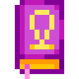
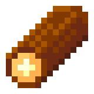
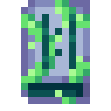
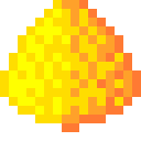
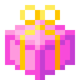
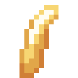
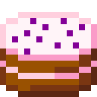
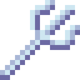
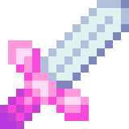
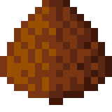

Wysyła 10 osób z największą ilością monet. Można wybrać czy mają być wzięte pod uwagę wszystkie monety, monety w banku lub monety w portfelu.
Wysyła 10 osób z największą ilością XP.
Dodano wiadomość błędu jeśli wybrany przedmiot nie istnieje, nie ma receptury, bądź receptura jest niedostępna.
Dziura
Zmieniono kolor lokacji.
Na ostatniej warstwie dziury został dodany Pajęczy Fragment, który ma 7% szansy na pojawienie się.
Zaktualizowano Skarb:
🔺 Monety 10-50 -> 50-200
🔻 Piach 85% -> 60%
➕ Kamień 4-9 85%
Od teraz komenda może wysłać informacje o kilku obecnych lub nadchodzących wydarzeniach.
Dodano wiadomość błędu jeśli wybrany przedmiot nie istnieje lub nie można się nim wymienić.
Dodano wiadomość błędu jeśli wybrany przedmiot nie istnieje, nie ma receptury, bądź receptura jest niedostępna.
Dodano nowy typ event, który zostanie zamieniony na różne przedmioty podczas wydarzenia jeśli zostały one zdefiniowane. Jeśli nie zostaną domyślna opcja zostanie znaleziona.
Las
🔻 Monety 49,9% -> 34,9%
➕ event 15% (Monety 1000 1-2 XP)
Pustynia
🔻 Nic 33,33% -> 27%
➕ event 6,33% (Nic)
Jaskinia
Zaktualizowano kolor.
Usunięto 25% szansę na porażkę.
Zmieniono szansę na wylosowanie każdego elemenetu:
🔺 Banknot 60% -> 80%
🔻 Złota Esencja 30% -> 15%
🔻 Diament 10% -> 5%
Zmieniono mnożnik wygranej:
🔺 Banknot x1.5 -> x2
🔺 Złota Esencja x2 -> x5
Dodano wiadomość błędu jeśli wybrany przedmiot nie istnieje lub nie można go przetopić.
Dodano wiadomość błędu jeśli wybrane paliwo nie istnieje lub nie jest paliwem.
Dodano wiadomość błędu jeśli wybrany przedmiot nie istnieje lub nie można się nim wymienić.
Dodano wiadomość błędu jeśli wybrany przedmioty nie istnieją, nie można się nim wymienić lub są takie same.
Komenda została usunięta, ponieważ zostały dodane dwie nowe z podobną funkcjonalnością.
"Placeholder"
Kupno: ❌
Sprzedaż: 30
Rzadkość: 🔵 Rzadki
Wymienialny: ✅
"Placeholder"
Kupno: ❌
Sprzedaż: 200
Rzadkość: 🟣 Epicki
Wymienialny: ✅
"Fioletowy Fragment, który zyskał swoją nazwę, dlatego że udało się go odnaleźć tylko w pobliżu siedlisk pająków. Pożądzany przez wielu ze względu na jego ogromną wytrzymałość."
Kupno: ❌
Sprzedaż: 3000
Rzadkość: 🟡 Legendarny
Wymienialny: ✅
Birthday Spellbook 2 -> 2000
Prezent Urodzinowy 0 -> 200
Tort Urodzinowy 2 -> 200
Trofeum Drugich Urodzin 2 -> 20000
Urodzinowy Balon 2 -> 20
Wielki Urodzinowy Miecz 2 -> 2000
Do każdej księgi zaklęć, która miała teksturę została dodana tekstura zaklęcia.
Birthday Spellbook

Drewno

Księga Pnączy

Kula Jaskini
Piach

Prezent Urodzinowy

Róg Morex

Tort Urodzinowy

Trofeum Drugich Urodzin
Trójząb

Trójząb Heksy
Urodzinowy Balon
Wielki Urodzinowy Miecz

Ziemia

Złota Korona
Chleb
Regeneruje 30 HP w walce
Fasola
Regeneruje 35 HP w walce
Mleko
Regeneruje 20 HP w walce
Tort Urodzinowy
Regeneruje 100 HP w walce
Roman
Stara Oferta:
| Cena | Przedmiot |
| 10 Kaktus | 3 Lód |
| 3 Szczypce Skorpiona | 1 Złoto |
| 5 Złota | 1 Ruda Żelaza |
| 2 Złota | 1 Banknot |
| 15 Rubinów | 1 Złoty Miecz |
| 30 Rubinów | 1 Księga Śmierci |
Nowa Oferta
| Cena | Przedmiot |
| 10 Kaktus | 3 Lód |
| 3 Szczypce Skorpiona | 1 Złoto |
| 2 Złota | 1 Banknot |
| 1 Kryształ Pustyni | 1 Rubin |
| 15 Rubinów | 1 Złoty Miecz |
| 30 Rubinów | 1 Księga Śmierci |
Kusel Skaard
Stara Oferta:
| Cena | Przedmiot |
| 15 Fragment Metalu | 1 Pochodnia |
| 10 Żelazo | 5 Drewno |
| 1 Żelazny Miecz | 10 Szkło |
| 1 Żelazny Kilof | 1 Chleb |
| 1 Kryształ Pustyni | 1 Rubin |
| 3 Młotek | 1 Jabłko |
Nowa Oferta
| Cena | Przedmiot |
| 15 Fragment Metalu | 1 Pochodnia |
| 10 Żelazo | 5 Drewno |
| 1 Żelazny Miecz | 10 Szkło |
| 1 Żelazny Kilof | 1 Chleb |
| 20 Ruda Żelaza | 1 Banknot |
| 3 Młotek | 1 Jabłko |
Został dodany system wydarzeń, który zarządza wydarzeniami. Wysyła on powiadomienia kiedy wydarzenia się kończą, zaczynają lub chwilę przed końcem wydarzenia. Automatycznie rozpoczyna i kończy wydarzenia. W trakcie wydarzenia mogą być dostępne nowe przedmioty na /search, nowe zadania, mnożniki monet i XP za różne aktywności. Jednocześnie może być aktywne tylko jedno wydarzenie.
W informacjach deweloperskich jeżeli ilość przedmiotu będzie między dwiema takimi samymi liczbami to będzie wyświetlona sama liczba.
Od teraz po zaakceptowaniu edycji wroga w powiadomieniu jest wysyłana nowa nazwa Własnego Wroga.
Zadanie "Czas Walki" zostało zmienione, aby po jego ukończeniu użytkownik otrzymywał Zieloną Esencję zamiast Żelaznego Miecza.
Zmieniono ilość dni, w których trzeba było wykonać co najmniej jedno zadanie, aby otrzymać gwarantowane legendarne zadanie z 60 do 15.
Zmieniono szanse na zadania:
🔻 Zwykłe 60% -> 55%
🔺 Rzadkie 30% -> 32%
🔺 Epickie 9,9% -> 10%
🔺 Legendarne 0,1% -> 3%
Naprawiono błąd związany z tym, że wiadomość o osiągnięciu limitu Własnych Wrogów nie mogła być wysłana.
Naprawiono błąd związany z tym, że wiadomości o niepoprawnej wartości po stworzeniu Własnego Wroga nie były wysyłane.
Naprawiono błąd związany z tym, że wiadomość o stworzeniu Własnego Wroga nie były wysyłana.
Naprawiono błąd związany z tym, że nazwa Własnego wroga nie zmieniała się po jego edycji.
Naprawiono błąd związany z tym, że Własny Wróg nie zmieniał się po jego edycji dopóki bot nie został zrestartowany.
Naprawiono błąd związany z tym, że wiadomości o niepoprawnej wartości po edycji Własnego Wroga nie były wysyłane.
Naprawiono błąd związany z tym, że wiadomość o edycji Własnego Wroga nie były wysyłana.
Naprawiono błąd związany z brakiem przycisków w wiadomości.
Naprawiono błąd związany z tym, że samouczek walki zawsze był po polsku.
Naprawiono błąd związany z tym, że bot próbował wysłać wiadomość potwierdzenia po wysłaniu wiadomości o niewłaściwej wartości.
Naprawiono błąd związany z tym, że nie sformatowany opis przeciwnika po rozpoczęciu walki z nim zmieniał się na sformatowany.
Naprawiono błąd związany z tym, że nazwa opcji tryb była zamieniona w języku polskim i angielskim.